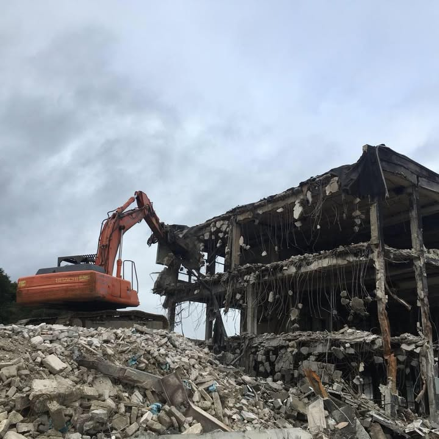

Reframing TK Brolly from an old brochure-style site into a serious contractor brand built around authority, safety, structural expertise, and project proof across the UK and Ireland.

That’s the core shift. TK Brolly already has heritage and capability, but the site needs to demonstrate it like a premium contractor, not just list it.
BSG’s format works because it is clear and organised. For TK Brolly, that same clarity should be aimed at demolition, dismantling, enabling works, and live-site complexity.
Use clearer structure around controlled demolition, industrial dismantling, strip-out, and planned site clearance.
Bring the technically difficult work forward. This is what makes the business feel serious and differentiated.
Package the environmental side properly. It helps the site feel safer, cleaner, and more credible for larger jobs.
The fastest way to make TK Brolly feel premium is to lead with work. Not abstract promises, actual project structure, actual challenges, actual outcomes.
Large image, cleaner headline, real context. This is where site constraints, method, and programme confidence should live.
Show the more delicate, higher-trust work. This moves the brand upmarket fast.
Give the business a proper portfolio feel, with enough scale and constraint detail to look convincing.
That’s the simplest format. It feels grown-up, contractor-like, and gives buyers confidence quickly.
Instead of generic safety paragraphs, package the delivery process into something structured and visual. That makes the brand feel more controlled and more expensive.
Survey, scope, sequence, and define the right demolition method before plant arrives.
Protect structures, segregate hazards, and set up safe, controlled site conditions.
Execute with the right machinery, trained operators, and disciplined programme management.
Recycle, segregate waste, manage haulage, and show environmental responsibility clearly.
Leave a clean site, a clear record, and a stronger final impression for the client team.
This version shifts TK Brolly closer to the BSG-style structure you wanted, but with a more demolition-specific tone. The next jump in quality is simple: replace the current placeholders with 2 to 4 real social/site shots and the whole thing will feel much more legitimate.